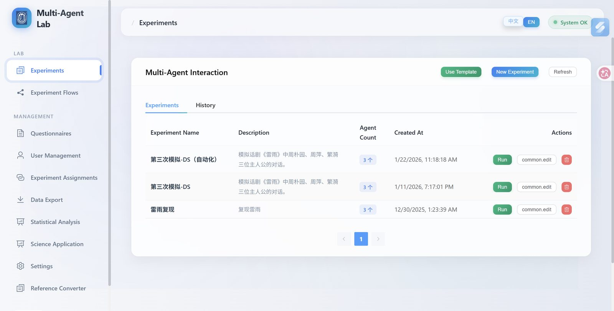
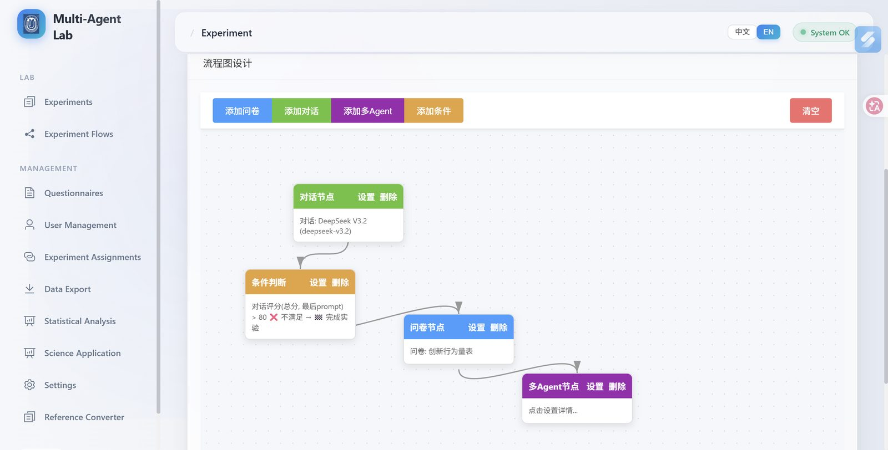
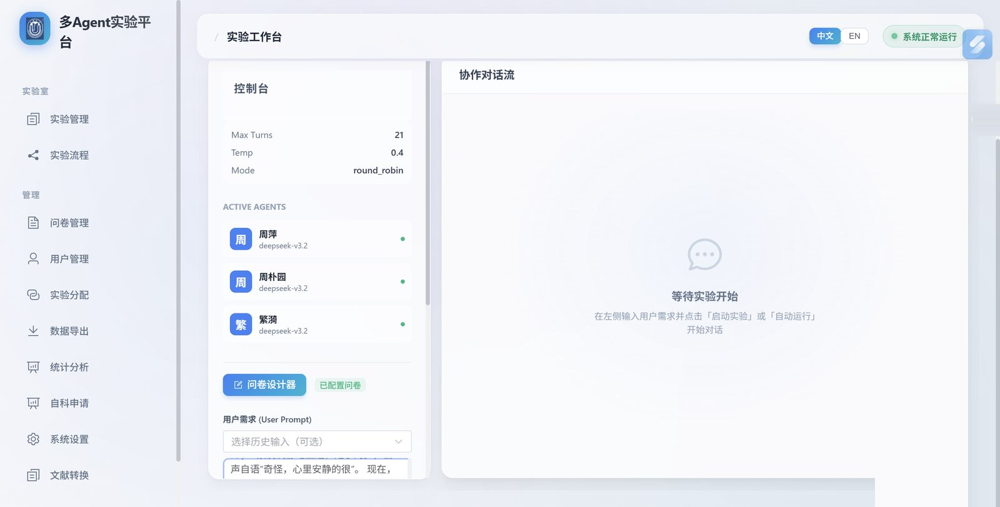
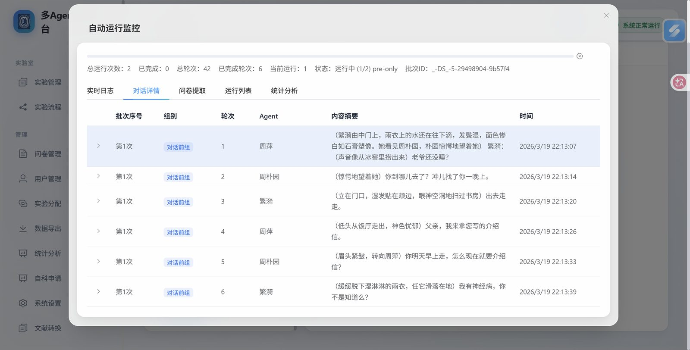
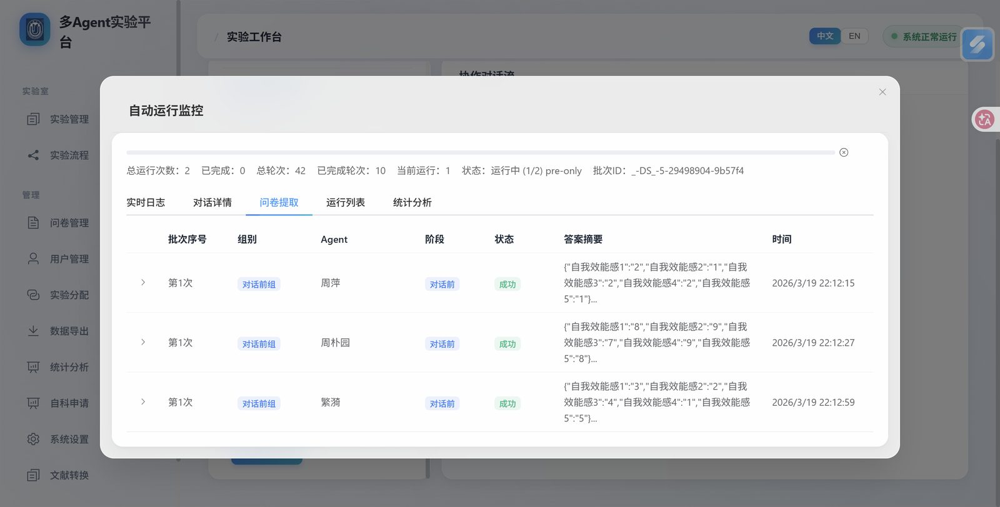
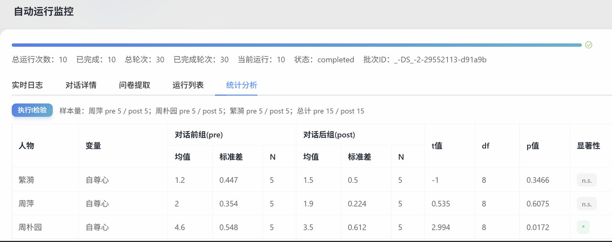
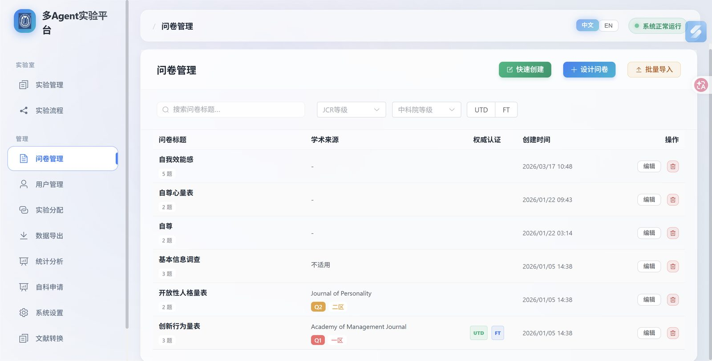
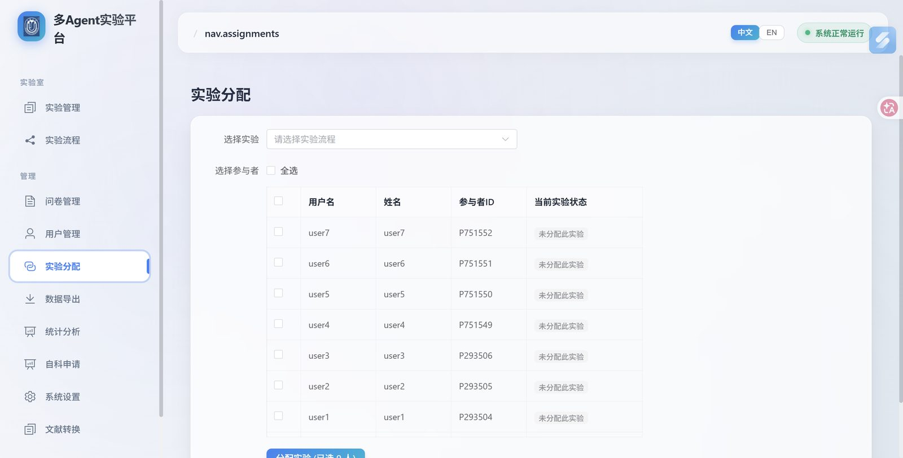
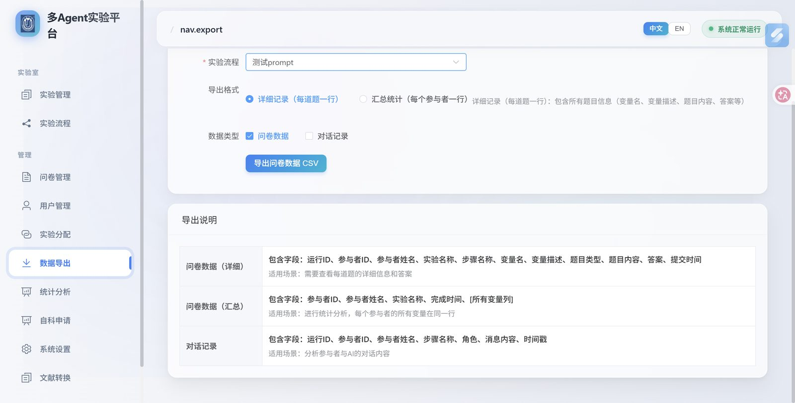

多 Agent 实验平台
独立设计并实现的多智能体协作编排与实验管理系统，支持可视化工作流编排、Human-in-the-Loop 中断恢复与 WebSocket 实时推送。









节点状态机
pending / running / waiting_human / done / error / skipped
WebSocket 推送
多用户并发 Session，Token 级流式输出
Human-in-the-Loop
断点暂停，管理员介入后从断点继续
01背景与挑战
在多智能体协作实验中，传统方案缺乏可视化编排能力，无法在流程运行时介入干预，且 LLM 调用开销极高，难以支撑反复迭代的实验设计。
"需要一个可以像积木一样拼装 Agent 节点、随时暂停让人类介入、测试时不消耗真实 Token 的平台。"
整个系统从零开始，独立完成后端编排引擎、前端可视化画布、WebSocket 实时通信与用户权限体系的全栈设计与交付。
02技术设计
工作流编排引擎
自主实现节点状态机（6 种状态），支持条件分支、循环节点与断点恢复，失败时从最近检查点重启。
Human-in-the-Loop
流程在确认节点自动暂停，WebSocket 向管理员推送审批界面，管理员操作后流程从断点继续执行。
WebSocket 实时通信
全双工通信，多用户并发 Session 独立维护，Agent 输出按 userId 路由，Token 级流式推送至前端。
Mock 测试模式
对 LLM 调用层做接口抽象，Mock 模式下测试无需消耗真实 Token，可测试性设计贯穿全系统。
Human-in-the-Loop 流程示意图
03项目成果
完整交付了从数据库设计、编排引擎、实时通信到前端可视化的全栈系统，独立承担产品设计与工程开发，生产环境稳定运行。
双角色权限体系
管理员 / 参与者双角色，批量创建账号，按实验组分配被试，权限隔离。
内置数据分析
结构化导出（Excel / JSON）、批量 t 检验、文献格式转换（APA / GB/T）。
可视化流程画布
基于 Vue Flow 实现拖拽式节点编排，实时反映各节点运行状态。
零 Token 可测试性
Mock 模式接口抽象，所有业务逻辑可在不调用真实 LLM 的情况下完整验证。